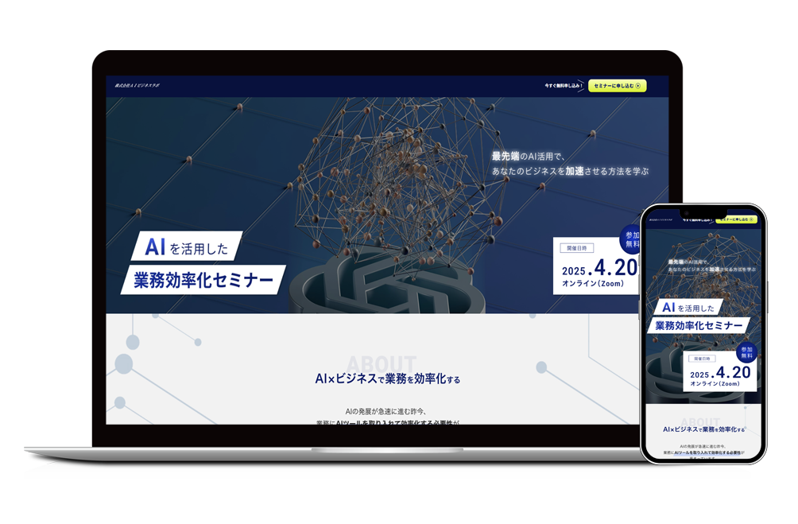

AIを活用した業務効率化セミナー
オリジナルLP
Schedule
2025.8.17 - 2025.8.21
Role
デザイン制作、実装
Client
株式会社AIビジネスラボ 桐生 和真様（架空）

01Design Concept
「初心者でもすぐに最先端のAIツールで業務効率化が叶うオンラインセミナー」をコンセプトに設定し、AIツールの導入に悩むビジネスマンの背中を押すとともにセミナーの信頼感が伝わるようなデザインや構成にしました。
Purpose
オンラインビジネスセミナーの告知・集客・申し込み受付
Target
20~40代のAIを仕事に活かしたい男性/女性
Font
日本語: Hiragino Kaku Gothic ProN
英語: Roboto
ビジネスライクな信頼感がありつつも親しみやすい雰囲気が出るようにしました。
Color
薄いグレーをベースカラーに、群青をメインカラーに、黄緑をアクセントカラーに使用し、落ち着きや信頼感を与えつつ、AIという最先端技術と希望を感じさせる配色にしました。
02Technical Details
レスポンシブデザインに対応させています。CTAボタンを複数配置し、コンバージョン数の増加を図りました。また、お客様の声ではカルーセルを、Q&Aではアコーディオンメニューを活用し、ユーザーの利便性を意識しました。
Design Tools
Figma, Photoshop
Development
Studio